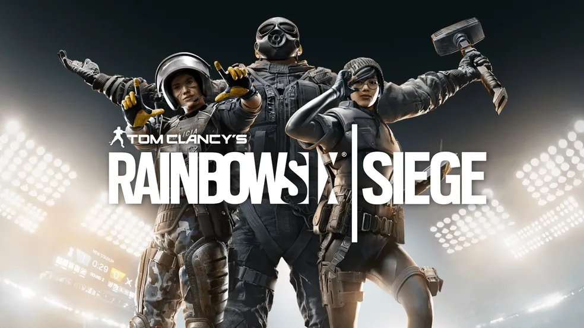
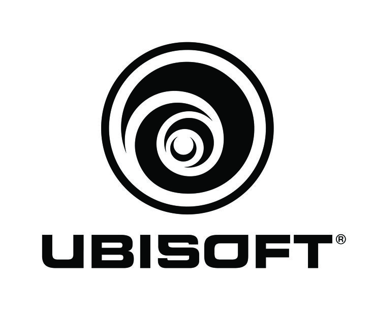

Wiki sobre Rainbow Six Siege
Início | Operadores | Mapas | Armas | Sobre
Este site foi criado para reunir informações sobre o jogo Rainbow Six Siege.


Criadora do jogoRainbow Six Siege é um jogo de tiro tático que valoriza estratégia, comunicação e trabalho em equipe.
Durante as partidas, os jogadores podem escolher diferentes operadores, cada um com suas próprias habilidades e equipamentos.
O objetivo é reunir informações importantes sobre Rainbow Six Siege e ajudar novos jogadores a conhecer melhor o jogo.
R6 Wiki
Desenvolvido por Gabriel Pereira